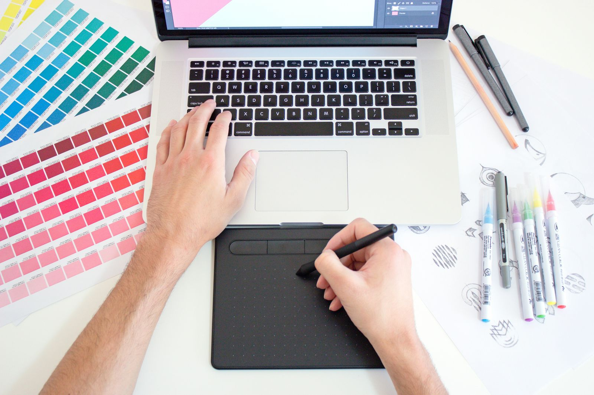

Si estás empezando
Prueba Figma: corre en el navegador y tiene muchísimos tutoriales en español.
Programas que usan los equipos de diseño para crear, probar y compartir ideas.

Cada herramienta sirve para una etapa distinta del proceso de diseño.
| Herramienta | Para qué sirve | Dónde se usa | Mejor para |
|---|---|---|---|
| Figma | Diseñar pantallas y prototipos, y trabajar en equipo en tiempo real | Navegador y aplicación de escritorio | Diseño de interfaces completo, de principio a fin |
| Balsamiq | Hacer wireframes rápidos con aspecto de boceto | Navegador y aplicación de escritorio | Probar ideas de estructura antes de diseñar los detalles |
| Miro | Pizarra digital para lluvia de ideas, mapas y flujos | Navegador | Investigación y trabajo en equipo en las primeras etapas |
| Sketch | Diseñar interfaces con librerías de componentes | Editor para macOS | Equipos que trabajan en computadores Mac |
Los planes y precios cambian, así que consúltalos en los sitios oficiales: Figma, Balsamiq, Miro y Sketch (se abren en una pestaña nueva).
Prueba Figma: corre en el navegador y tiene muchísimos tutoriales en español.
Usa Balsamiq o Miro. Al ser tan simples, te obligan a pensar en la estructura y no en los colores.
Figma y Miro permiten que varias personas editen a la vez y dejen comentarios.